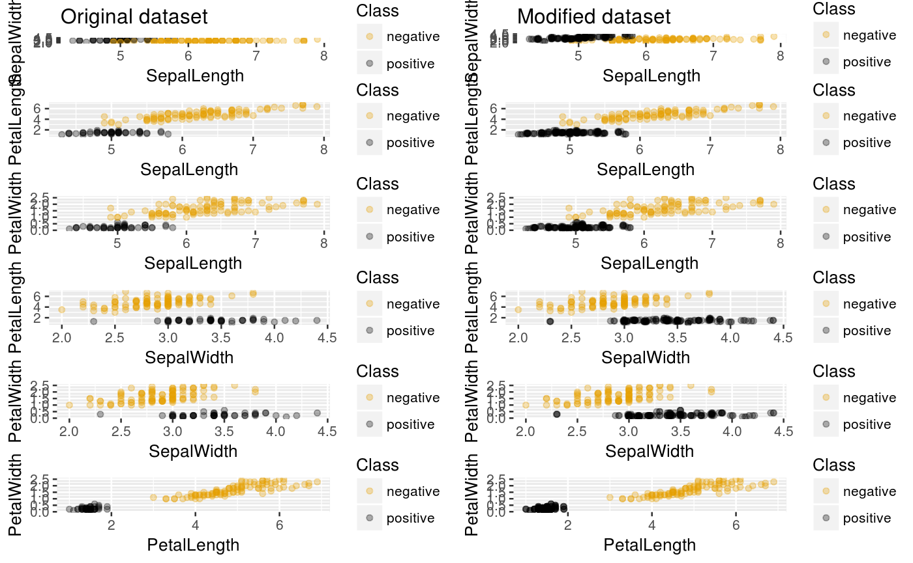

It plots a grid of one to one variable comparison, placing the former dataset graphics next to the balanced one, for each pair of attributes.
plotComparison(dataset, anotherDataset, attrs, cols = 2, classAttr = "Class")
| dataset | A |
|---|---|
| anotherDataset | A |
| attrs | Vector of |
| cols | Integer. It indicates the number of columns of resulting grid. Must be an even number. By default, 2. |
| classAttr |
|
Plot of 2D comparison between the variables.
data(iris0) set.seed(12345) rwoSamples <- rwo(iris0, numInstances = 100) rwoBalanced <- rbind(iris0, rwoSamples) plotComparison(iris0, rwoBalanced, names(iris0), cols = 2, classAttr = "Class")